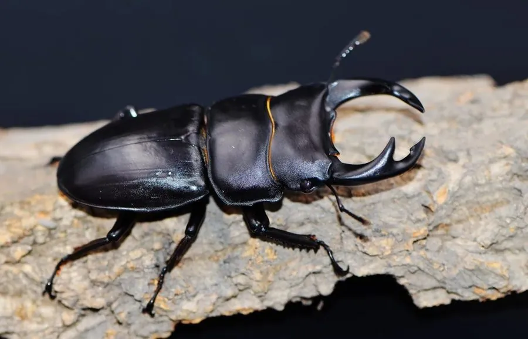

昆虫 · 动物界
中华大锹 Dorcus hopei

中国大型锹甲，雄性上颚粗壮内弯，体黑褐色有光泽，幼虫生活在朽木中，是受欢迎的观赏和饲养甲虫。
- 分类
- 门节肢动物门纲昆虫纲目鞘翅目科锹甲科属大锹属
- 栖息环境
- 阔叶林和杂木林，幼虫在朽木中生活
- 地理分布
- 中国大部分地区，以及越南等邻近地区
- 保护级别
- 暂无评估；受栖息地减少和捕捉影响
物种志
中华大锹成虫体长约 3–7 cm（含大颚），雌雄差异明显：雄虫上颚粗壮、内弯，内侧有齿，雌虫大颚短小；体黑色至黑褐色，鞘翅光滑有光泽，足粗壮带刺。大型雄虫的大颚非常发达，是同类争斗的武器。
幼虫在朽木和腐木中生活，取食木质，幼虫期约 1–2 年；成虫夜间活动，吸食树液和熟果，有趋光性，白天多藏在树洞和落叶层中。雄虫会用大颚夹住对手，把对方掀翻，争夺树液和雌虫。中华大锹分布于中国大部分地区，是亚洲著名的观赏甲虫，也是合法的饲养和标本对象。野生种群受栖息地减少和过度捕捉影响，饲养时应选择人工繁殖个体，不要随意捕捉野生个体。
形态与习性
- 食性幼虫取食朽木；成虫吸食树液和熟果
- 体长雄虫含大颚约 3–7 cm，雌虫约 3–4 cm
- 识别雄虫大颚粗壮内弯，体黑褐有光泽
- 生活史幼虫期约 1–2 年，成虫夜间活动
- 分布中国大部分地区
趣味知识
- 中华大锹雄虫的大颚又粗又弯，是夹斗的武器。
- 它的幼虫在朽木里生活一两年，靠吃木头长大。
- 饲养中华大锹应选择人工繁殖个体，不要捕捉野生个体。